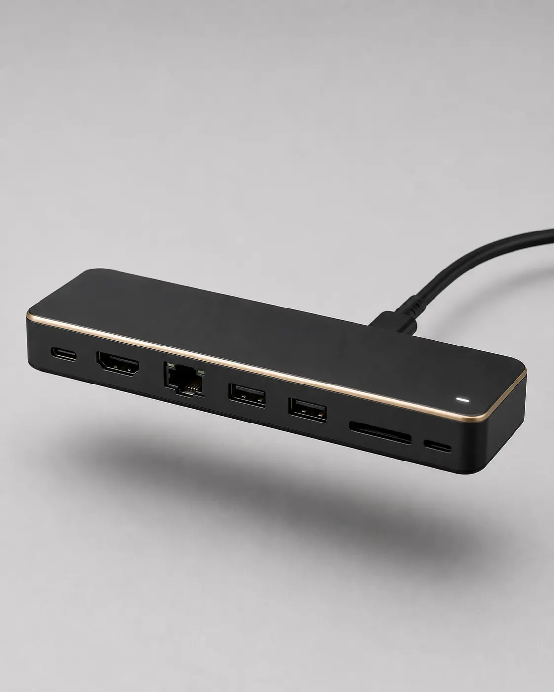

Insights · July 8, 2026
One Cable, Zero Clutter

A stable stand solves half the problem. The other half is what happens the moment you actually start working — Ethernet, a second monitor, a card reader, and a charger cable, all fighting for space around a laptop that has maybe three usable ports.
The Cable Problem Nobody Mentions
Plug in Ethernet, HDMI, and a USB drive directly into a laptop at a panel, and you've created three separate points where a cable can snag, get yanked, or work loose mid-session. A single cable engineering workstation setup solves this by moving all of that onto the mount itself, so only one cable ever touches the laptop.
What an Integrated Dock Actually Adds
An integrated USB-C docking hub stand accessory turns the mount into the connection point instead of the laptop. Ethernet, HDMI, card readers, and extra USB ports all live on the arm — the laptop just gets one USB-C cable.
Pass-Through Ethernet
A pass-through ethernet laptop stand connection means the network cable runs to the mount, not to a dongle hanging off the laptop's single USB-C port — which also frees that port up for charging at the same time.
Built-In HDMI
An industrial laptop stand with HDMI port built into the dock lets you drive a second monitor for side-by-side ladder logic and HMI screens without an adapter rattling loose in a bag.
Rugged Notebook Docking
A rugged notebook dock mount is built to the same standard as the stand it's attached to — sealed connectors, a housing that can take a knock, not a consumer hub repurposed for an industrial job.
Tablet Compatibility
Many crews run tablets for HMI work instead of full laptops. An industrial tablet holder, quick release, uses the same mounting interface, so the dock and arm don't care which device is attached.
Cable Management as a System, Not an Afterthought
The best factory floor cable management tools aren't separate clips and ties bought later — they're built into the arm from the start, with routing channels that keep everything internal and out of the way of hands, tools, and foot traffic.
Why This Matters More Than It Sounds
Every loose cable at a job site is a small risk multiplied by every hour of the shift — a snag, a disconnect mid-transfer, a trip hazard on a walkway. Consolidating connectivity onto the mount doesn't just look tidier. It removes failure points one at a time.
See how the Mr.Align workstation applies this in the field.
Explore the Workstation